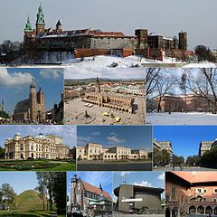

Kraków, Stołeczne Królewskie Miasto Kraków – miasto na prawach powiatu położone w południowej Polsce nad Wisłą, drugie co do liczby mieszkańców[1]. Formalna stolica Polski do 1795 roku i miasto koronacyjne oraz nekropolia królów Polski. Od 1000 roku nieprzerwanie stolica diecezji krakowskiej (jednej z pięciu w ówczesnej Polsce), a od 1925 archidiecezji i metropolii. Lokowany przed 1228 rokiem, ponownie w 1257 r.
Jedziemy do Krakowa!
A na rynku zamieszanie
Sprzedawanie, handlowanie
Kalina Rokosz
Pełna wersja wiersza, kliknij tutaj!

- mapa
- ciekawe miejsca
- zabytki
- sport
- mapa
- ciekawe miejsca
- zabytki
- sport
| Nazwa Rezerwatu | Powierzchnia | Przedmiot ochrony |
|---|---|---|
| Bielańskie Skałki | 1,73 ha | spontaniczne procesy sukcesji biocenoz leśnych na skalistym, dawniej pozbawionym lasu terenie |
| Bonarka | 2,29 ha | rezerwat geologiczny, uskoki geologiczno-tektoniczne, powierzchnie abrazyjne, odsłonięte utwory jurajskie, kredowe i trzeciorzędowe |
| Panieńskie Skały | 6,41 ha | wąwóz jurajski z wychodniami skał wapiennych, naturalny las bukowy i grądowy. |